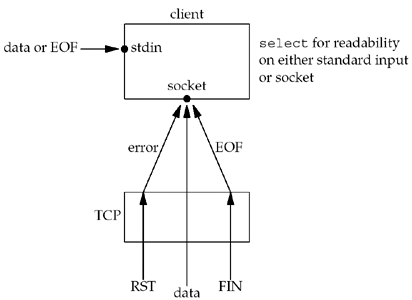

| [ Team LiB ] |
|
6.4 str_cli Function (Revisited)We can now rewrite our str_cli function from Section 5.5, this time using select, so we are notified as soon as the server process terminates. The problem with that earlier version was that we could be blocked in the call to fgets when something happened on the socket. Our new version blocks in a call to select instead, waiting for either standard input or the socket to be readable. Figure 6.8 shows the various conditions that are handled by our call to select. Figure 6.8. Conditions handled by select in str_cli. Three conditions are handled with the socket:
Figure 6.9 shows the source code for this new version. Figure 6.9 Implementation of str_cli function using select (improved in Figure 6.13).select/strcliselect01.c
1 #include "unp.h"
2 void
3 str_cli(FILE *fp, int sockfd)
4 {
5 int maxfdp1;
6 fd_set rset;
7 char sendline[MAXLINE], recvline[MAXLINE];
8 FD_ZERO(&rset);
9 for ( ; ; ) {
10 FD_SET(fileno(fp), &rset);
11 FD_SET(sockfd, &rset);
12 maxfdp1 = max(fileno(fp), sockfd) + 1;
13 Select(maxfdp1, &rset, NULL, NULL, NULL);
14 if (FD_ISSET(sockfd, &rset)) { /* socket is readable */
15 if (Readline(sockfd, recvline, MAXLINE) == 0)
16 err_quit("str_cli: server terminated prematurely");
17 Fputs(recvline, stdout);
18 }
19 if (FD_ISSET(fileno(fp), &rset)) { /* input is readable */
20 if (Fgets(sendline, MAXLINE, fp) == NULL)
21 return; /* all done */
22 Writen(sockfd, sendline, strlen(sendline));
23 }
24 }
25 }
Call select8–13 We only need one descriptor set—to check for readability. This set is initialized by FD_ZERO and then two bits are turned on using FD_SET: the bit corresponding to the standard I/O file pointer, fp, and the bit corresponding to the socket, sockfd. The function fileno converts a standard I/O file pointer into its corresponding descriptor. select (and poll) work only with descriptors. select is called after calculating the maximum of the two descriptors. In the call, the write-set pointer and the exception-set pointer are both null pointers. The final argument (the time limit) is also a null pointer since we want the call to block until something is ready. Handle readable socket14–18 If, on return from select, the socket is readable, the echoed line is read with readline and output by fputs. Handle readable input19–23 If the standard input is readable, a line is read by fgets and written to the socket using writen. Notice that the same four I/O functions are used as in Figure 5.5, fgets, writen, readline, and fputs, but the order of flow within the function has changed. Instead of the function flow being driven by the call to fgets, it is now driven by the call to select. With only a few additional lines of code in Figure 6.9, compared to Figure 5.5, we have added greatly to the robustness of our client. |
| [ Team LiB ] |
|